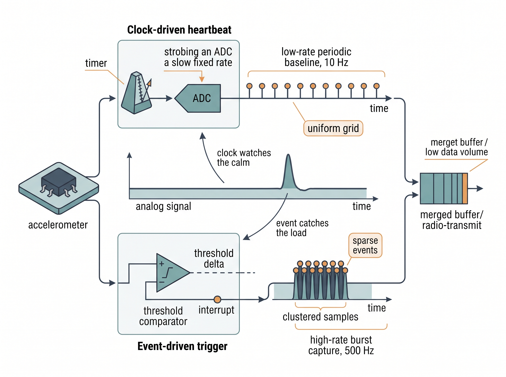

"You told me to report every millisecond. For six hours nothing moved, and I dutifully filed six hours of the word 'still'."
An Overworked Telemetry Agent
Two ways to decide when to look
A sensing system faces a scheduling question before it faces any signal-processing question: when do I take a sample? There are exactly two answers. Let a clock decide, and sample on a fixed cadence whether or not anything changed. Or let the signal decide, and emit a sample only when something worth reporting happens. This section is about that fork. It sounds like an implementation detail. It is not. The choice sets your data volume, your power draw, your worst-case latency, and even the mathematical form of the time series that every later chapter has to consume. Pick wrong and you either drown a battery in redundant samples or miss the one microsecond that mattered.
Section 3.1 assumed a uniform sampling grid: take a reading every \(\Delta t\) seconds and reason about aliasing against the Nyquist limit. That is the clock-driven world, and it is the default almost everyone learns first. Its opposite, event-driven sensing, wins whenever the signal is mostly idle. We keep the book's notation: the continuous signal is \(x(t)\), a clock-driven stream is \(x[n] = x(n\,\Delta t)\), and an event-driven stream is a list of timestamped pairs \((t_k, x_k)\) where the gaps \(t_{k+1} - t_k\) are not constant. If the idea of a transducer emitting an asynchronous pulse feels abstract, Chapter 2 grounds it in the physics of the devices that do exactly this.
Clock-driven sensing: the metronome
What it is. A clock-driven (also called synchronous, periodic, or time-triggered) sensor is paced by a timer. Every \(\Delta t\) seconds the analog-to-digital converter (ADC) fires, a number lands in a buffer, and the cadence never varies. The sampling rate \(f_s = 1/\Delta t\) is a design constant, and the resulting stream is a uniform grid indexed by an integer \(n\).
Precisely, clock-driven sensing makes the timer, not the signal, the sole trigger for every conversion. The spacing \(\Delta t\) between samples is therefore fixed in advance and independent of what the signal is doing. That regularity earns its keep twice over. It lets the whole classical toolkit (Fourier analysis, Nyquist reasoning, fixed-tap filters) treat your data as an evenly indexed array, and it keeps buffer sizes, bandwidth, and latency constant and predictable. The mechanism is a free-running hardware clock (a crystal oscillator dividing down to \(f_s\)) that periodically strobes the ADC. Prefer it when the signal is continuously informative or a fixed grid is required downstream. Reach for the event-driven alternative below only when the signal is mostly idle and energy or latency is the binding constraint.
Why it dominates. Uniform sampling is the substrate the entire classical toolkit assumes. The Fourier transform, the Nyquist theorem, finite impulse response (FIR) and infinite impulse response (IIR) filters, and nearly every off-the-shelf neural sequence model expect one sample per tick with a constant spacing. When your data is a uniform grid you can reach for Chapter 6's filters and Chapter 7's spectra without a second thought. Simplicity is the whole selling point.
What it costs. A metronome is indifferent to content. If the world is quiet, the clock keeps sampling anyway, spending bandwidth, storage, and energy on samples that repeat the last one to the bit. If the world produces a spike between two ticks, the clock never sees it: temporal resolution is capped at \(\Delta t\) no matter how fast the event was. You pay a fixed cost for a variable world, and the mismatch is exactly where event-driven sensing gets its opening.
Event-driven sensing: report only on change
What it is. An event-driven (asynchronous, data-triggered) sensor stays silent until the signal does something notable, then emits a timestamped sample. "Notable" is defined by a rule baked into the device: cross a threshold, change by more than \(\delta\) since the last report, or trip an interrupt line (a hardware signal that pauses the processor so it can handle an event the moment it occurs). The output is not a grid but a sparse sequence \((t_k, x_k)\), dense in time when the world is active and empty when it is calm.
Why it exists. Three pressures push designs toward events. First, power: a device that transmits nothing during quiet stretches can idle its radio and its processor. That saving is decisive for coin-cell and batteryless deployments, where every transmission spends a measurable fraction of the energy budget. Second, latency: an interrupt fires the instant a threshold is crossed, so the reaction time is set by the event, not by waiting for the next scheduled tick. Third, dynamic range in time: a level-crossing scheme (defined precisely in the next subsection) captures a microsecond transient and a multi-hour plateau in the same stream. No single fixed \(f_s\) can do that without either oversampling the plateau or aliasing the transient. These pressures are not abstract: they have already produced silicon built to sense exactly this way.
Checkpoint
So far: an event-driven sensor stays silent until the signal changes, then emits a timestamped sample; it trades the regular timing of a clock for wins on power, latency, and dynamic range in time.
The canonical hardware. The dynamic-vision sensor (DVS), or event camera, is the purest example: each pixel independently emits an event only when its log-brightness changes past a threshold, so a static scene produces almost no data (a real sensor still emits a trickle of background noise events) and a fast-moving edge produces microsecond-resolution events. We treat these devices in depth in Chapter 46. The humbler cousins are everywhere too: an accelerometer's motion-interrupt pin, a door contact, a Geiger counter, and send-on-delta industrial telemetry all speak in events. In short: the clock asks "is it time yet?", the event asks "did anything happen?", and choosing between those two questions fixes your power, latency, and data volume before a single sample is processed.
Research Frontier
The open question this section skirts is how to keep the event camera's microsecond latency without giving up the rich texture of a conventional frame. Gehrig and Scaramuzza's 2024 Nature paper "Low-latency automotive vision with event cameras" answers it with a hybrid detector that fuses a 20 Hz frame stream with the asynchronous event stream, reaching the effective reaction speed of a 5,000 Hz camera at a fraction of the bandwidth and detecting hazards that fall between conventional frames. It is a concrete demonstration that the "clock-driven or event-driven" fork this section frames as a choice is increasingly answered by fusing both in one perception pipeline.
Your retina filed for the same patent
Event-driven sensing is not a clever engineering trick; it is the design biology settled on long before anyone built a camera. Your retina does not read out frames at a fixed rate. Retinal ganglion cells fire mostly on change, which is why a perfectly stabilized image fades from view within seconds (Troxler fading): with nothing crossing a threshold, the neurons fall silent and the scene literally disappears. The eye defeats this by twitching constantly with tiny involuntary microsaccades, manufacturing the very changes it needs to keep reporting. The silicon dynamic-vision sensor, whose pixels emit an event only on a log-brightness change, is a near-direct copy of this circuit, drawn from the neuromorphic work of Carver Mead and Misha Mahowald in the late 1980s. The metronome was the artificial idea all along.
The axis is scheduling, not sensor type
Clock-driven versus event-driven is not a property of the physics being measured; it is a decision about when to convert and when to transmit. The same accelerometer can run in periodic mode (256 Hz uniform samples) or interrupt mode (a pulse when acceleration exceeds a threshold). Choosing between them is choosing where to spend your scarcest resource: cycles and energy on a calm signal, or resolution and simplicity on a bursty one. Every later trade in this chapter, from timestamps to buffering, inherits this first choice.
Level-crossing sampling: the bridge concept
The gap between a leak sensor whose coin cell dies in a month and one that runs for years is often nothing more than this one rule for deciding when to speak. Here is the mechanism that earns those extra years. The cleanest way to turn a continuous signal into events is level-crossing (or send-on-delta) sampling. Instead of sampling the time axis uniformly, you sample the amplitude axis uniformly: emit \((t_k, x_k)\) whenever \(x(t)\) has moved by more than a fixed step \(\delta\) from the last value you reported. Formally, given the last emitted sample \(x_{k}\), the next event occurs at the first \(t\) where \(|x(t) - x_k| \ge \delta\). Flat regions generate almost nothing; steep regions generate a burst. Figure 3.2.1 contrasts the two schemes on one signal: clock-driven sampling walks the time axis at a fixed spacing \(\Delta t\), placing a sample on every tick even across the flat stretches, whereas level-crossing sampling walks the amplitude axis at a fixed step \(\delta\), placing a sample only where the curve crosses a level and so clustering its samples on the bump. The code below runs the rule over a synthetic trace and counts how few samples survive.
Mental Model
Think of penciling a child's height onto a doorframe. A clock-driven parent measures on the first of every month and records a number whether or not the child grew, filling the frame with near-identical marks through a slow winter. The level-crossing parent instead draws a new line only when the child has gained a full centimeter since the last mark: during a growth spurt the lines cluster tightly, during a plateau months pass with no mark at all. The step size \(\delta\) is that "one full centimeter," and the doorframe holds no line does not mean the measurement was lost, it means nothing crossed a step. Same information about growth, a fraction of the pencil marks.
import numpy as np
# A calm baseline with one short burst: mostly flat, briefly active.
t = np.linspace(0, 10, 10_000) # 1 kHz clock-driven grid
x = 0.05 * np.sin(2 * np.pi * 0.2 * t) # slow, low-amplitude drift
x[4800:5000] += np.hanning(200) * 2.0 # a fast transient at t~5 s
def level_crossing(t, x, delta):
"""Emit (t_k, x_k) only when x moves by >= delta since the last event."""
ts, xs = [t[0]], [x[0]]
last = x[0]
for ti, xi in zip(t[1:], x[1:]):
if abs(xi - last) >= delta:
ts.append(ti); xs.append(xi); last = xi
return np.array(ts), np.array(xs)
et, ex = level_crossing(t, x, delta=0.1)
print(f"clock-driven samples: {x.size}") # 10000, one per tick
print(f"event-driven samples: {et.size}") # a few hundred, clustered in the burst
print(f"fraction kept: {et.size / x.size:.3%}")Run it and the printout tells the whole story: the uniform grid pays 10,000 samples to describe a signal that was interesting for two hundredths of its duration, while the event stream concentrates its samples exactly where the action was. That concentration is the benefit. The cost arrives the moment a downstream tool wants a uniform grid back, because most of Part II and Part IV assume one.
Step-Through: level-crossing on six samples
Trace the level_crossing rule by hand with \(\delta = 1.0\) over a tiny clock-driven grid of six ticks, times \(t = [0, 1, 2, 3, 4, 5]\) and values \(x = [0.0, 0.3, 0.7, 1.2, 1.1, 2.5]\). The state to carry is last, the value of the most recently emitted event.
- \(t=0\): initialize by emitting \((0,\ 0.0)\); set
last= 0.0. - \(t=1\), \(x=0.3\): \(|0.3 - 0.0| = 0.3 < 1.0\), skip.
- \(t=2\), \(x=0.7\): \(|0.7 - 0.0| = 0.7 < 1.0\), skip.
- \(t=3\), \(x=1.2\): \(|1.2 - 0.0| = 1.2 \ge 1.0\), emit \((3,\ 1.2)\); set
last= 1.2. - \(t=4\), \(x=1.1\): \(|1.1 - 1.2| = 0.1 < 1.0\), skip. Note the reference is now 1.2, not 0.0.
- \(t=5\), \(x=2.5\): \(|2.5 - 1.2| = 1.3 \ge 1.0\), emit \((5,\ 2.5)\); set
last= 2.5.
Six clock ticks collapse to three events, \((0, 0.0), (3, 1.2), (5, 2.5)\). The subtle point is at \(t=4\): the comparison is always against the last emitted value, not the previous tick, so slow drift never accumulates into a spurious event and a small dip after a jump stays silent.
Common Misconception
The misconception is that event-driven sensing is always the more efficient choice, so switching to events can only reduce data and power. It only wins when the signal is sparse in time: on a continuously active signal every level crossing fires an event, and because each event also carries a timestamp, an event stream can easily produce more bytes and more radio transmissions than a plain periodic grid would. Sparsity, not the scheduling mechanism itself, is what buys the savings.
Rebuilding a uniform grid in two lines
Reconstructing a clock-driven series from events (zero-order hold: each event's value persists until the next) is a loop over segments with edge cases at the ends, easily 15 to 20 lines done by hand. pandas collapses it to two, because reindex-plus-forward-fill is a zero-order hold:
import pandas as pd
events = pd.Series(ex, index=pd.to_timedelta(et, unit="s"))
grid = events.reindex(pd.timedelta_range(0, periods=10_000, freq="1ms")).ffill()reindex().ffill(), which is exactly a zero-order-hold reconstruction, replacing a hand-written segment loop.The library handles the timestamp alignment, the fill semantics, and the boundary samples, turning a fiddly reconstruction into a one-liner you can trust.
Choosing, and blending, the two
With the mechanics of turning a signal into events and rebuilding a grid from them in hand, the remaining question is purely practical: which regime to reach for, and when. When clock-driven wins. Reach for periodic sampling when the signal is continuously informative (audio, a spinning-machine vibration line that never truly rests), when you need clean spectra, or when downstream models demand a fixed grid and the power budget is generous. Its predictability is a feature: buffer sizes, latency, and bandwidth are all constant and easy to reason about.
When event-driven wins. Reach for events when the signal is sparse in time (rare threshold crossings, mostly-still scenes), when energy is the binding constraint, or when you need sub-tick latency on a specific trigger. The irregular timestamps are the price, and they ripple forward: models built for uneven spacing, such as the continuous-time state-space models of Chapter 16, exist partly to consume event streams natively rather than forcing them onto a grid first.
The common answer is both. Real systems hybridize. A wearable runs its accelerometer in low-rate periodic mode as a baseline and arms a high-rate interrupt that wakes a burst capture when motion spikes. The periodic stream gives context and clean features; the event trigger buys latency and detail without paying for them during the many quiet hours. That two-tier pattern feeds directly into the streaming-inference budgets of Chapter 60. Figure 3.2.1 illustrates Hybrid two-tier sensing architecture (periodic heartbeat plus amplitude-triggered event burst).

A structural-health monitor on a highway bridge
An engineering team instrumented a highway overpass with accelerometers to catch fatigue-inducing vibration from heavy-truck crossings. A pure clock-driven design at 500 Hz per channel across dozens of channels would have generated tens of gigabytes a day, almost all of it recording an empty bridge at rest, and drained the solar-buffered nodes overnight. They went hybrid. Each node held a slow 10 Hz periodic heartbeat for baseline temperature-and-strain trending, plus an amplitude-triggered event mode: when vertical acceleration crossed a threshold, the node captured a 500 Hz burst window around the crossing and transmitted only that. Data volume fell by more than an order of magnitude, the batteries survived the winter, and every genuine truck event was captured at full resolution. The clock watched the calm; the event caught the load.
Real-World Application: industrial process historians
The AVEVA PI System (formerly OSIsoft PI), the plant historian running under a large share of the world's refineries, power stations, and pharmaceutical lines, stores tags event-driven by default rather than on a fixed clock. Its "exception reporting" filter is exactly send-on-delta at the sensor edge, and its "swinging door" compression keeps a new point only when the signal leaves a moving tolerance band. Together they let a single server archive years of history for hundreds of thousands of sensor tags, because a valve that sits at 60 percent for an hour writes one point, not thousands.
Exercise: size the trade for a leak detector
You are designing a battery water-leak sensor for under a kitchen sink. It reports over a low-power radio, and each transmission costs a fixed energy \(E_{tx}\). Ninety-nine percent of the time the reading is bone dry and unchanging; a leak, when it happens, must be reported within 5 seconds. (1) Write the expected daily energy for a clock-driven design at rate \(f_s\), and for an event-driven design that transmits only on a wet-threshold crossing plus one heartbeat per hour. (2) At what \(f_s\) does the clock-driven design cost 100x more energy than the event-driven one? (3) State one failure mode the event-driven design has that the clock-driven design does not, and how a periodic heartbeat mitigates it.
Self-check
- Rewrite a clock-driven stream \(x[n] = x(n\,\Delta t)\) and an event-driven stream \((t_k, x_k)\) in words: what is held constant in each, the time axis or the amplitude axis?
- Give one signal where clock-driven sampling is the right default and one where event-driven wins, and justify each in terms of power, latency, or data volume.
- You have an event stream and a filter that assumes a uniform grid. Name the reconstruction step that bridges them and one artifact it can introduce.
Try It: Measure the redundancy in a real signal
Fifteen minutes on a laptop turns the trade-off in this section into a number you can see.
- Record about ten seconds of a mostly-quiet signal: use
sounddevice.rec()to capture room audio with one clap or knock, or read an existing WAV withscipy.io.wavfile.read(). Normalize the array to the range \([-1, 1]\). - Paste in the
level_crossing(t, x, delta)function from this section and run it once on your trace, printing the fraction of samples kept. - Sweep
deltaacross, say,np.logspace(-3, -1, 20); for each value store the kept fraction, then plot kept fraction versusdeltaon a log x-axis withmatplotlib. - For one middling
delta, reconstruct a uniform grid from the events with thepandasreindex().ffill()trick shown earlier, and compute the root-mean-square error (RMSE) between the reconstruction and the original. - Overlay the original and the zero-order-hold reconstruction on one plot. Note where the error concentrates (the steep transients) and confirm it is near zero across the quiet stretches.
You will read the section's central claim straight off your own data: how few samples survive on a quiet signal, and exactly what amplitude detail the step size \(\delta\) costs you.
Lab: weigh a real event-camera stream against its clock-driven twin
Goal. Feel the data-rate gap between event-driven and clock-driven sensing on genuine neuromorphic hardware data, not a synthetic trace, and see how the gap depends on scene activity.
Tools. Python with the tonic library (pip install tonic), which downloads standard event-camera datasets. Use the DVS Gesture set (people waving, clapping, and drumming in front of a dynamic-vision sensor); NumPy and Matplotlib for the tallies and plots.
Steps. Load one recording with tonic.datasets.DVSGesture(save_to="./data") and pull a single sample, an array of events each carrying \((x, y, t, \text{polarity})\) (polarity records whether that pixel got brighter or darker). Count the events and divide by the recording duration to get the true event rate. Now build the clock-driven twin: pick a frame rate \(f\) and, using tonic.transforms.ToFrame, bin the events into frames of size \(128 \times 128\); the equivalent clock-driven cost is \(f \times 128 \times 128\) pixel readings per second regardless of motion.
What to vary. Sweep the frame rate \(f\) across, say, 30, 100, 500, and 1000 Hz. Also compare a busy segment (drumming) against a near-still segment (a raised hand held steady).
What to observe. Plot event count per time bin over the recording and mark where the bursts of motion fall. Then plot the event-driven byte rate against the clock-driven byte rate as \(f\) climbs: the event stream barely moves while the frame cost scales linearly with \(f\). Confirm the section's core claim directly: during the still segment the event rate collapses toward zero while the clock-driven twin keeps paying full price for every pixel, every frame.
What's Next
Section 3.3 confronts the timestamps themselves. An event stream is only as trustworthy as the \(t_k\) on each sample. Reconcile several sensors, each on its own clock, into one timeline, and defining "the same instant" becomes the hard part of any multi-sensor system.